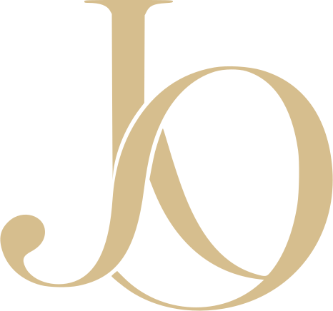
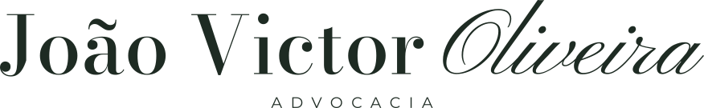
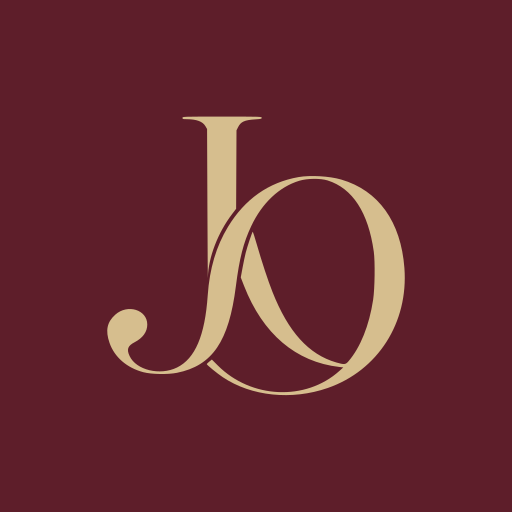

Marfim
HEX #F2ECE1
RGB 242 · 236 · 225
Fundos, papelaria e texto em superfícies escuras.
Manual de identidade visual
Precisão na forma. Sobriedade na presença. Uma identidade construída para acompanhar o tempo.

O encontro entre uma didone e um gesto caligráfico dá à marca seu equilíbrio: estrutura e expressão. O monograma JO é o elemento de reconhecimento; as duas composições tipográficas permitem que a identidade ocupe formatos distintos com a mesma voz.
A haste do J atravessa o movimento do O sem perder a leitura das iniciais. O terminal arredondado, as serifas e o contraste entre traços finos e espessos são parte do desenho.
Use o monograma em ícones, avatares e detalhes. A assinatura horizontal atende cabeçalhos e peças largas. O lockup vertical concentra a identidade em capas, papelaria e composições centrais.
Os arquivos de produção têm fundo transparente e letras convertidas em curvas. Use os SVGs fornecidos, sem redigitar ou tentar reconstruir o monograma com fontes.
Baixar monograma em SVGO nome permanece protagonista. Espaços precisos separam as letras da assinatura e abrem respiro entre o monograma, o nome e o descritor da composição vertical.


O monograma aparece acima do nome em caixa alta. O descritor espaçado fecha a composição. Preserve alinhamento central, proporções e distâncias internas.
Em um espaço largo e baixo, prefira a assinatura. Em um campo quadrado ou vertical, prefira o lockup. Quando o nome já estiver presente ou não couber com boa leitura, use o monograma.
Baixar lockup em SVGCada linha apresenta uma combinação autorizada. O fundo é uma aplicação do manual; os quinze SVGs são transparentes e contêm somente a cor da marca. Selecione qualquer peça para baixar seu arquivo.
Verde inglês sobre marfim · Principal…-verde-marfim.svg
Marfim sobre verde inglês · Inversa principal…-marfim-verde.svg
Latão sobre bordô · Cerimonial…-latao-bordo.svg
Marfim sobre bordô · Inversa de apoio…-marfim-bordo.svg
Preto sobre fundo claro · Reprodução em uma tinta…-preto.svg
Em impressão, latão é a referência cromática. Acabamento metálico, hot stamping e cores especiais exigem prova física da gráfica. Os valores deste kit estão em sRGB e não especificam tinta metálica.
Respiro e escala protegem o desenho. Não aproxime textos, bordas, fotografias ou outras marcas além do limite indicado. Os SVGs têm enquadramento justo: a margem de proteção deve ser acrescentada no layout.
No monograma isolado, use ¼ da sua altura como margem mínima. Na assinatura e no lockup, reserve ¼ da altura total da peça em todos os lados. Em composições editoriais, prefira margens maiores.
O favicon já incorpora o respiro em sua tela quadrada. Use-o como entregue, sem recortar a área interna.
| Peça | Digital | Impresso | Uso |
|---|---|---|---|
| Monograma | 48 px | 12 mm | Ícones e detalhes |
| Assinatura | 360 px | 65 mm | Formatos horizontais |
| Lockup | 240 px | 45 mm | Composições centrais |
| Favicon | 32 × 32 px | — | Exceção para navegador |
A assinatura não deve ser comprimida para caber em uma navegação de celular: use o monograma. Os mínimos são referências conservadoras; em papel poroso, gravação ou bordado, amplie a peça e aprove uma prova antes da produção.
O marfim é a base de leitura. O verde inglês estrutura a identidade. Bordô traz profundidade; couro e latão entram como detalhes. A proporção orienta o conjunto das peças, sem exigir a presença das cinco cores em cada aplicação.
Proporção sugerida para o sistema visual. Áreas vazias contam como cor de fundo.
HEX #F2ECE1
RGB 242 · 236 · 225
Fundos, papelaria e texto em superfícies escuras.
HEX #1E2B23
RGB 30 · 43 · 35
Marca principal, títulos e campos institucionais.
HEX #5E1E2A
RGB 94 · 30 · 42
Aplicações de presença, ícones e acentos.
HEX #7A5C33
RGB 122 · 92 · 51
Texto secundário sobre marfim e detalhes.
HEX #D6BE8E
RGB 214 · 190 · 142
Marca sobre bordô e detalhes sobre fundos escuros.
Leitura. Para textos corridos, use verde inglês sobre marfim ou marfim sobre verde. Sobre bordô, prefira marfim. Couro pode compor legendas sobre marfim; latão sobre marfim fica restrito a detalhes decorativos.
Reprodução. Os valores HEX e RGB são equivalentes em sRGB. Para produção gráfica, converta conforme o perfil de impressão e valide uma prova no suporte escolhido; evite conversões CMYK genéricas.
Bodoni Moda dá forma aos títulos. Pinyon Script acrescenta um gesto pontual. Montserrat organiza a leitura e as informações práticas. As três famílias estão disponíveis no Google Fonts sob licença SIL Open Font License.
Aa Bb Cc
João & razão.
Oliveira
ADVOCACIA · 0123456789
Bodoni Moda · 400 / 500
Display e títulos.
Na marca em curvas: peso 500, eixo óptico 18, para preservar os
fios finos na reprodução.
Pinyon Script · 400
Acento e assinatura.
Reserve para uma palavra curta ou um gesto editorial. Não usar em
parágrafos, menus ou caixa alta.
Montserrat · 400 / 500 / 600
Corpo,
navegação, botões e legendas. Use 400 no texto, 500 em rótulos e
600 para ênfase.
Clareza em cada decisão.
Uma atuação próxima.
Informação que orienta.
A leitura deve ser simples, confortável e precisa. Parágrafos curtos e uma hierarquia clara dão espaço à informação, sem disputar atenção com o conteúdo.
Entre em contato
Informações complementares com o mesmo cuidado de leitura.
As frases acima são amostras tipográficas, sem compromisso de texto
para o site. Nos títulos do site, ajuste o tamanho com
clamp(); preserve o corpo em pelo menos 16 px. As marcas
vetoriais não devem ser recompostas com texto HTML.
A mesma disciplina acompanha a marca no papel e na tela: cor plana, bom contraste, informação essencial e áreas generosas de silêncio. As aplicações abaixo são estudos de composição.

Instagram
Monograma isolado.
Leitura antes do nome.
Os campos entre colchetes são dados pendentes, não contatos reais. As aplicações não estão prontas para envio à gráfica ou publicação até o preenchimento e a conferência dessas informações.
A força da identidade está na constância do desenho. As intervenções abaixo prejudicam sua leitura e não fazem parte do sistema.
Escalone proporcionalmente, preservando a relação entre largura e altura.
O eixo vertical mantém a estabilidade do desenho e das composições.
Evite sombra, relevo digital, contorno, degradê ou brilho sobre a marca.
Use as combinações fornecidas, sem recolorir letras ou partes isoladas.
Latão pede fundo escuro. Evite fotografias e texturas que atravessem o desenho.
Respeite a proteção e não altere as distâncias internas das composições.
Não substitua o JO oficial pelo desenho de qualquer exploração anterior. Não troque as fontes da assinatura, remova o til de “João” ou crie novas relações entre o nome e “ADVOCACIA”.
Os arquivos vetoriais são a origem para as aplicações da marca. Preserve uma cópia sem alterações e use sempre a versão adequada à cor do fundo.
SVGs em curvas · Fundo transparente nas marcas
PNG em sRGB ·
Ícones com fundo bordô
Sem fontes incorporadas nos logos
Este manual funciona sem JavaScript. As fontes da página carregam do Google Fonts; os logos permanecem íntegros mesmo sem conexão.